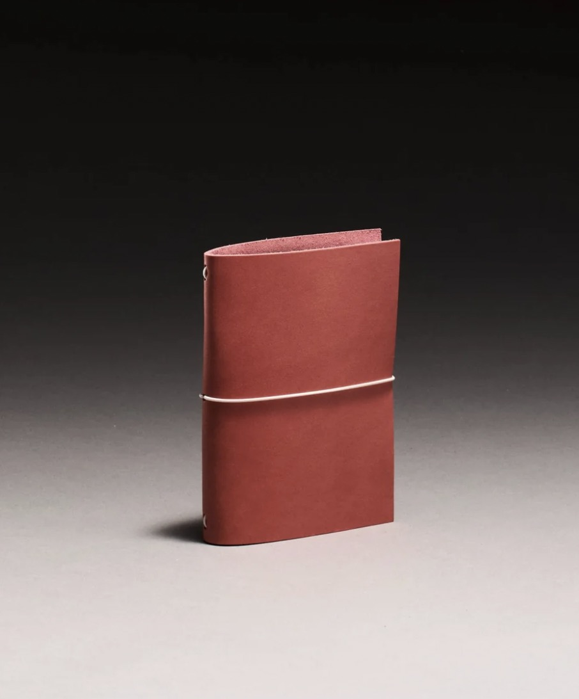

travellers & pocket size
the vessel is hand-stitched in New York City from vegetable-tanned leather, cut and finished without machines.
The leather develops a natural patina over time, meaning every vessel ages differently and becomes entirely your own.
Available in pocket and traveller's size, the journal is built to live in your bag, your back pocket, or on your desk. Refillable inserts let you keep the cover for life.
No two are the same. That is the point
$55 - Travellers Journal (A5 inserts)
$45 - Pocket (A6 inserts)
each order comes with 1 free insert. each order comes with 1 free insert. each order comes with 1 free insert. each order comes with 1 free insert.
custom order